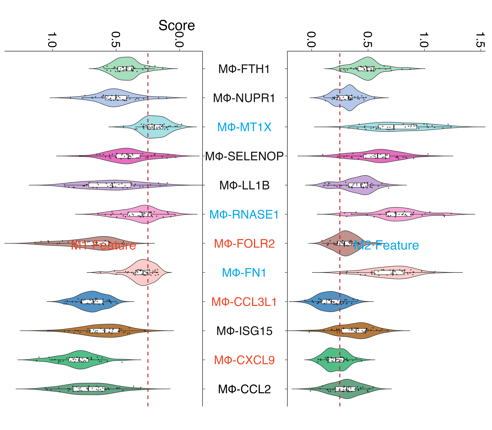

参数要点
| 参数 | 默认 | 说明 |
|---|---|---|
left_group |
字母序第一个 | 放左边的分组 |
sort_by |
total |
left/right/total/none |
center_gap |
自动 | 中间留白宽度；按标签字号算，不用手调 |
show_values |
false | 是否在柱端标数值 |
plot60 · 代码 2 · 图 3 · 笔记 1 · 代码库专题
长表：条目列 + 分组列（必须恰好两个水平）+ 数值列。

butterfly violin plotbutterfly_violin_plot.png
共 3 张：点缩略图切换主图，下载按钮跟随当前主图。
图源：butterfly_violin_plot.png
从专题 README 抽取；原文顺序保留，未跑过的部分照实标注。
两个分组在同一批条目上背靠背对比：左边一组、右边一组，中间共享条目名。
比并排条形图更省横向空间，差异一眼可见。
| 参数 | 默认 | 说明 |
|---|---|---|
left_group |
字母序第一个 | 放左边的分组 |
sort_by |
total |
left/right/total/none |
center_gap |
自动 | 中间留白宽度；按标签字号算，不用手调 |
show_values |
false | 是否在柱端标数值 |
长表：条目列 + 分组列（必须恰好两个水平）+ 数值列。
term,group,value
T1,OS,13
T1,PFS,11render_plot method_id="plot60"
arguments: {"csv_path": "your.csv",
"columns": {"term": "term", "group": "group", "value": "value"}}geom_text 的 size 是毫米，0.52 * size * 2.845 / 72，scale_x_continuous 默认再外扩 5%，会把算好的留白等比压缩expand = expansion(mult = 0, add = 0)。geom_col 做不了可控留白 —— 柱子从 0 起，留白只能靠轴 expansion 硬挤。geom_rect 显式给每根柱的 xmin/xmax。MsTt模板/250310_butterfly_plot/（含真实数据 example_data.csv）。
2 个源码文件，按目录顺序；本机绝对路径已替换为 ~。 代码可复制，但需要按自己的数据改路径与参数。
---
title: "250310_butterfly_plot 小提琴"
output: html_document
date: "2025-04-10"
editor_options:
chunk_output_type: console
---
```{r setup, include=FALSE}
knitr::opts_chunk$set(echo = TRUE)
```
# 创建示例数据
```{r}
# 创建示例数据
library(tidyverse)
library(writexl)
# 设置随机种子确保可重复性
set.seed(123)
# 变量名列表
vars <- c("MΦ-CCL2", "MΦ-CXCL9", "MΦ-ISG15", "MΦ-CCL3L1", "MΦ-FN1", "MΦ-FOLR2",
"MΦ-RNASE1", "MΦ-LL1B", "MΦ-SELENOP", "MΦ-MT1X", "MΦ-NUPR1", "MΦ-FTH1")
# 创建M1数据集 - 我们假设每个变量有40个样本
samples_count <- 40
# 为M1数据生成一些有区别的随机值
data_M1 <- data.frame(matrix(nrow = samples_count, ncol = length(vars)))
colnames(data_M1) <- vars
# 根据不同的均值和标准差生成M1数据
data_M1[, 1] <- rnorm(samples_count, mean = 0.7, sd = 0.2) # MΦ-CCL2
data_M1[, 2] <- rnorm(samples_count, mean = 0.8, sd = 0.15) # MΦ-CXCL9
data_M1[, 3] <- rnorm(samples_count, mean = 0.6, sd = 0.2) # MΦ-ISG15
data_M1[, 4] <- rnorm(samples_count, mean = 0.7, sd = 0.1) # MΦ-CCL3L1
data_M1[, 5] <- rnorm(samples_count, mean = 0.3, sd = 0.1) # MΦ-FN1
data_M1[, 6] <- rnorm(samples_count, mean = 0.7, sd = 0.2) # MΦ-FOLR2
data_M1[, 7] <- rnorm(samples_count, mean = 0.3, sd = 0.15) # MΦ-RNASE1
data_M1[, 8] <- rnorm(samples_count, mean = 0.5, sd = 0.2) # MΦ-LL1B
data_M1[, 9] <- rnorm(samples_count, mean = 0.4, sd = 0.15) # MΦ-SELENOP
data_M1[, 10] <- rnorm(samples_count, mean = 0.2, sd = 0.1) # MΦ-MT1X
data_M1[, 11] <- rnorm(samples_count, mean = 0.5, sd = 0.15) # MΦ-NUPR1
data_M1[, 12] <- rnorm(samples_count, mean = 0.4, sd = 0.1) # MΦ-FTH1
# 创建M2数据集 - 同样有40个样本
data_M2 <- data.frame(matrix(nrow = samples_count, ncol = length(vars)))
colnames(data_M2) <- vars
# 根据不同的均值和标准差生成M2数据
data_M2[, 1] <- rnorm(samples_count, mean = 0.3, sd = 0.15) # MΦ-CCL2
data_M2[, 2] <- rnorm(samples_count, mean = 0.2, sd = 0.1) # MΦ-CXCL9
data_M2[, 3] <- rnorm(samples_count, mean = 0.4, sd = 0.15) # MΦ-ISG15
data_M2[, 4] <- rnorm(samples_count, mean = 0.2, sd = 0.1) # MΦ-CCL3L1
data_M2[, 5] <- rnorm(samples_count, mean = 0.7, sd = 0.2) # MΦ-FN1
data_M2[, 6] <- rnorm(samples_count, mean = 0.3, sd = 0.1) # MΦ-FOLR2
data_M2[, 7] <- rnorm(samples_count, mean = 0.7, sd = 0.2) # MΦ-RNASE1
data_M2[, 8] <- rnorm(samples_count, mean = 0.4, sd = 0.15) # MΦ-LL1B
data_M2[, 9] <- rnorm(samples_count, mean = 0.6, sd = 0.2) # MΦ-SELENOP
data_M2[, 10] <- rnorm(samples_count, mean = 0.7, sd = 0.2) # MΦ-MT1X
data_M2[, 11] <- rnorm(samples_count, mean = 0.3, sd = 0.1) # MΦ-NUPR1
data_M2[, 12] <- rnorm(samples_count, mean = 0.5, sd = 0.15) # MΦ-FTH1
# 保存示例数据到Excel文件
write_xlsx(data_M1, "data1_M1_Feature.xlsx")
write_xlsx(data_M2, "data1_M2_Feature.xlsx")
```
```{r}
# 导入必要的库
library(tidyverse)
library(readxl)
library(patchwork)
library(ggplot2)
# 读入数据
data_M1 <- read_excel("data1_M1_Feature.xlsx")
data_M2 <- read_excel("data1_M2_Feature.xlsx")
# 将数据转成长格式
long_data_M1 <- data_M1 %>%
pivot_longer(cols = everything(),
names_to = "Variable",
values_to = "Value")
long_data_M2 <- data_M2 %>%
pivot_longer(cols = everything(),
names_to = "Variable",
values_to = "Value")
# 定义变量的展示顺序
order <- c("MΦ-CCL2", "MΦ-CXCL9", "MΦ-ISG15", "MΦ-CCL3L1", "MΦ-FN1", "MΦ-FOLR2",
"MΦ-RNASE1", "MΦ-LL1B", "MΦ-SELENOP", "MΦ-MT1X", "MΦ-NUPR1", "MΦ-FTH1")
long_data_M1$Variable <- factor(long_data_M1$Variable, levels = order)
long_data_M2$Variable <- factor(long_data_M2$Variable, levels = order)
# 定义颜色
col <- c("#66a686", "#52be87", "#b47a3d", "#5292c4", "#fbcdcb", "#c1938d",
"#f8a4d5", "#c7a8d9", "#e56ebe", "#a4e0e4", "#b3c8ea", "#a6dfbe")
text_col <- c("#000000", "#f04625", "#161112", "#f04625", "#00a8ee", "#f04625",
"#00a8ee", "#161112", "#161112", "#00a8ee", "#161112", "#161112")
# 创建M2小提琴图（右侧）
M2_plot <- ggplot(long_data_M2, aes(y = Variable, x = Value, fill = Variable)) +
geom_violin(trim = FALSE) +
geom_boxplot(width = 0.15, fill = "white", outliers = FALSE) +
# 添加散点图层以显示原始数据点
geom_jitter(size = 0.8, width = 0, height = 0.1, alpha = 0.5) +
geom_vline(xintercept = 0.25, linetype = "dashed", color = "#bf1a2c", size = 1) +
scale_x_continuous(expand = c(0, 0), position = "top", guide = guide_axis(angle = -90)) +
scale_fill_manual(values = col) +
labs(title = "M2 Feature", x = "Score") +
theme_classic() +
theme(axis.text.y = element_text(size = 28, hjust = 0.5, colour = text_col),
axis.text.x = element_text(size = 28, color = "black"),
axis.title.x = element_text(hjust = -0.8, size = 33),
axis.title.y = element_blank(),
axis.ticks.length = unit(2, "mm"),
plot.title = element_text(hjust = 0.5, vjust = -82, size = 30, color = "#00a8ee"),
legend.position = "none",
plot.margin = margin(r = 10, b = 50))
# 创建M1小提琴图（左侧）
M1_plot <- ggplot(long_data_M1, aes(y = Variable, x = -Value, fill = Variable)) +
geom_violin(trim = FALSE) +
geom_boxplot(width = 0.15, fill = "white", outliers = FALSE) +
# 添加散点图层以显示原始数据点
geom_jitter(size = 0.8, width = 0, height = 0.1, alpha = 0.5) +
geom_vline(xintercept = -0.25, linetype = "dashed", color = "#bf1a2c", size = 1) +
scale_x_continuous(expand = c(0, 0), position = "top",
guide = guide_axis(angle = -90),
labels = function(x) format(abs(x), nsmall = 1)) +
scale_y_discrete(position = "right") +
scale_fill_manual(values = col) +
labs(title = "M1 Feature") +
theme_classic() +
theme(axis.text.x = element_text(size = 28, color = "black"),
axis.text.y = element_blank(),
axis.title = element_blank(),
axis.ticks.length = unit(2, "mm"),
plot.title = element_text(hjust = 0.5, vjust = -82, size = 30, color = "#f04625"),
legend.position = "none",
plot.margin = margin(l = 5, b = 50))
# 将两个图组合成蝶状图
butterfly_plot <- M1_plot + M2_plot
# 显示图形
butterfly_plot
# 保存图像（可选）
ggsave("butterfly_violin_plot.png", butterfly_plot, width = 16, height = 14, dpi = 300)
```
---
title: "250310_butterfly_plot 蝴蝶图-小提琴图/堆积柱形图"
output: html_document
date: "2025-04-10"
editor_options:
chunk_output_type: console
---
```{r setup, include=FALSE}
knitr::opts_chunk$set(echo = TRUE)
```
# 创建示例数
```{r}
library(readxl)
# 创建示例数据（替代read_excel）
data <- data.frame(
type = rep(c("VenEC", "ArtEC", "Stalk_SII", "Stalk_SIII", "Tip_SII",
"Transition", "Tip_SIII", "Stalk_SI", "APLN+Tip_SI"), each = 2, times = 2),
response = rep(c("Risk", "Protective"), times = 18),
number = sample(1:15, 36, replace = TRUE),
group = rep(c("OS in TCGA", "PFS in TCGA"), each = 18)
)
#保存示例数据
write.csv(data, "example_data.csv", row.names = FALSE)
```
# 读取数据和绘图
```{r}
library(tidyverse)
library(readxl)
library(patchwork)
library(cowplot)
library(grid)
# 定义变量的展示顺序
data$type <- factor(data$type, levels = c("VenEC", "ArtEC", "Stalk_SII", "Stalk_SIII", "Tip_SII",
"Transition", "Tip_SIII", "Stalk_SI", "APLN+Tip_SI"))
data$response <- factor(data$response,levels = c("Risk", "Protective"))
# 定义颜色
col <- c("#b33c44", "#4f94b9")
OS_plot <- ggplot(data[data$group == "OS in TCGA", ], aes(number, type)) +
geom_col(aes(fill = response), color = "black", width = 0.7) +
scale_x_continuous(breaks = seq(0, 15, 5)) +
scale_fill_manual(values = col) +
labs(subtitle = "OS in TCGA") +
theme_classic() +
theme(axis.text.y=element_text(size = 20, hjust = 0.5, color = "black"),
axis.text.x = element_text(size = 20, color="black"),
axis.title = element_blank(),
axis.ticks.length = unit(2, "mm"),
axis.ticks = element_line(color = "black", linewidth = 1),
axis.line = element_line(color = "black", linewidth = 1),
plot.subtitle = element_text(hjust = 0.5, size = 22),
legend.position = "none",
plot.margin = margin(r = 15))
PFS_plot <- ggplot(data[data$group=="PFS in TCGA", ], aes(-number, type)) +
geom_col(aes(fill = response), color = "black", width = 0.7) +
scale_x_continuous(labels = function(x) format(abs(x))) +
scale_y_discrete(position = "right") +
scale_fill_manual(values = col) +
labs(subtitle = "PFS in TCGA") +
theme_classic()+
theme(axis.text.x = element_text(size = 20, color = "black"),
axis.text.y = element_blank(),
axis.title = element_blank(),
axis.ticks.length = unit(2, "mm"),
axis.ticks = element_line(color = "black", linewidth = 1),
axis.line = element_line(color = "black", linewidth = 1),
plot.subtitle = element_text(hjust = 0.5, size = 22),
legend.title = element_blank(),
legend.text = element_text(size = 15, color = "black"),
legend.key.size = unit(0.5, "cm"),
legend.key.spacing.y = unit(1, "mm"),
legend.position = c(0.3, 0.2),
plot.margin = margin(l = 15))
combined_plot <- PFS_plot + OS_plot +
plot_annotation(caption = "Number of cancer types",
theme = theme(plot.caption = element_text(hjust = 0.5, size = 22)))
# 显示最终图表
ggdraw(combined_plot) +
draw_grob(rectGrob(x = unit(0.5, "npc"), y = unit(0.865, "npc"),
width = unit(0.9, "npc"), height = unit(0.08, "npc"),
gp = gpar(col = "#b33c44", fill = NA, lwd = 2, lty = 2)))
ggsave("butterfly_plot.png", width = 10, height = 6, dpi = 300)
```
这个专题已经做成确定性工具，调用后直接返回图片， 不需要 AI 现写代码。